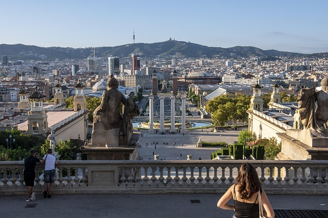

Barcelona: Ciudad de Gaudí
EuropaBarcelona, la cosmopolita capital de la región de Cataluña en España, es conocida por su arte y arquitectura. La fantástica iglesia de la Sagrada Familia y otros emblemáticos diseños modernistas de Antoni Gaudí adornan la ciudad.

La ciudad posee un rico patrimonio cultural y es un destino impresionante para los amantes del arte, la arquitectura, el deporte y la gastronomía.